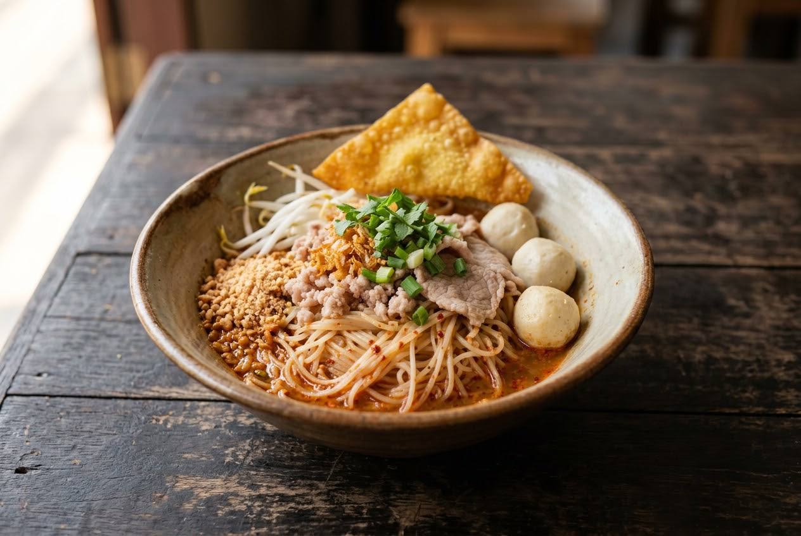

Clear pork-bone stock with pickled garlic, and a per-bowl dressing of ground peanuts, chilli flakes, fish sauce and lime — just enough liquid to coat. Not tom yum soup with noodles.

It shares a name with the famous soup and almost nothing else. Tom yum noodles run on a clear pork-bone stock — never a tom yum broth — and the "tom yum" happens per bowl, in a small dish: ground roasted peanuts, chilli flakes, fish sauce, sugar, pickled chilli vinegar, lime, then a ladle of boiling stock stirred through and poured over the noodles. ครัวตุ๊กตา's rule is the dish's whole philosophy: น้ำขลุกขลิก — just enough liquid to cling. A full bowl is a different dish.
The peanuts are the tell. Tom yum soup has none; tom yum noodles would collapse without them. And the ancient version adds one more secret: pickled garlic and its brine go into the stock itself. There's even a regional war inside the dish — Sukhothai's version runs thinner noodles, green beans and pre-mixed seasoning, and Pantip threads argue over what a Sukhothai bowl must contain the way other people argue about politics.
| Thai | English | Amount |
|---|---|---|
| กระดูกหมู | Pork bones, washed | 500 g |
| รากผักชี | Coriander roots | 3 |
| กระเทียม | Garlic | 1 head |
| พริกไทยเม็ด | Peppercorns | 1 tbsp |
| เกลือ | Salt | 1 tbsp |
| กระเทียมดอง + น้ำดอง | Pickled garlic, with its brine | 2 heads + 2 tbsp brine |
| น้ำตาลกรวด | Rock sugar (optional) | 1 lump |
| Thai | English | Amount |
|---|---|---|
| เส้นเล็ก | Thin rice noodles (sen lek) | 200 g |
| ถั่วงอก | Bean sprouts | a handful |
| เนื้อหมูต้ม | Boiled pork, sliced | 200 g |
| ลูกชิ้นปลา/กุ้ง | Fish and shrimp balls | 200 g |
| ฮือก้วย | Fried fish cake (huk guay) | 1 stick |
| หมูสับ (ลวก) | Minced pork, blanched | 100 g |
| เกี๊ยวทอด | Fried wonton | 1 |
| Thai | English | Amount |
|---|---|---|
| ถั่วลิสงคั่วบด | Ground roasted peanuts | 2 tbsp |
| พริกป่น | Chilli flakes | 1 tbsp |
| น้ำปลา | Fish sauce | 1 tbsp |
| น้ำตาลทราย | Sugar | 2 tbsp |
| น้ำส้มพริกดอง | Pickled chilli vinegar | 1 tbsp |
| มะนาว | Lime | ½ |
| กากหมูกระเทียมเจียว | Pork crackling with fried garlic | 2 tbsp |
| ต้นหอม ผักชี | Spring onion and coriander, chopped | ½ cup |
Thinner noodles, green beans, pre-mixed seasoning. The Sukhothai bowl is the regional signature: sen lek extra-thin, a handful of green beans, and the dressing mixed into the bowl before the stock — the seasoning sits at the bottom so every mouthful starts strong. Pantip threads argue about whether it must have red pork, minced pork or balls — the answer is yes, usually all three, and that's the point.
The Bangkok bowl (Pantip's other thread) leans into minced pork added generously, the seasoning poured over the top — same bones, different assembly.
Pickled garlic. The ancient stock includes it; modern shop stocks often drop it. The brine does the work — sweetness and depth without sugar.
Nam phrik phao. The modern Bangkok bowl adds roasted chilli paste to the dressing (Aroifin); the ancient version never does.
Onsen egg. A modern flourish on top; the old bowls don't carry it.
Offal. Liver and intestines are standard toppings — ครัวตุ๊กตา's husband "went yuck" at the intestines, and the recipe notes you can skip them.
Dry version. ก๋วยเตี๋ยวต้มยำแห้ง — the same dressing with no stock at all, tossed through the noodles. Same dish, zero liquid.
This recipe is translated from the following Thai-language sources. Where they disagree, we've said so.
1. Kapook / ครัวตุ๊กตา — "2 สูตรก๋วยเตี๋ยวต้มยำ สูตรโบราณเครื่องแน่นอร่อยครบ" (the ancient version, pickled-garlic stock, per-bowl dressing) — cooking.kapook.com
2. Aroifin (29 Sep 2025) — "วิธีทำ ก๋วยเตี๋ยวต้มยำ แซ่บถึงเครื่อง จี๊ดจ๊าดถึงใจ" (modern version with onsen egg and nam phrik phao) — aroifin.com
3. Pantip thread 30196469 — "ก๋วยเตี๋ยวต้มยำของคนสุโขทัยต้องเป็นแบบไหน" (the Sukhothai debate) — pantip.com
4. Pantip thread 41830715 — "ก๋วยเตี๋ยวต้มยำในกทม. ใส่หมูสับเยอะมาก" (the Bangkok bowl) — pantip.com